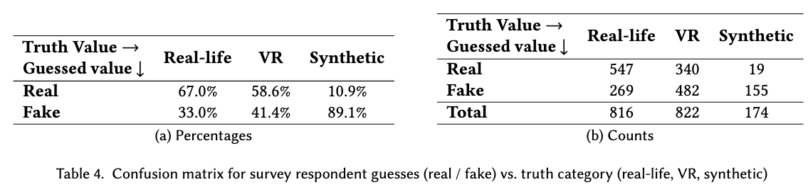
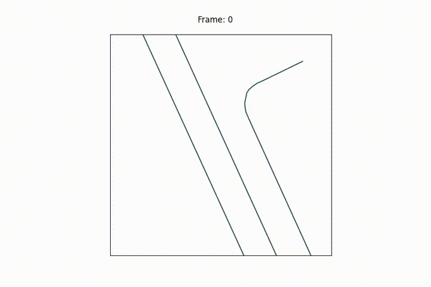
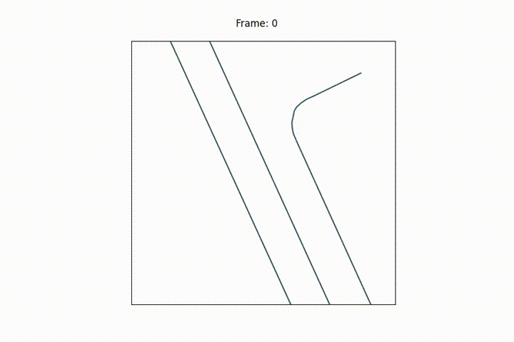

Evaluating a VR System for Collecting Safety-Critical
Vehicle-Pedestrian Interactions
Submission 8406 project webpage (supplementary material) for CHI 2024
Abstract
Autonomous vehicles (AVs) require comprehensive and reliable pedestrian trajectory data to ensure safe operation. However, obtaining data of safety-critical scenarios such as jaywalking and near-collisions like that shown in the video above, or uncommon agents such as children, disabled pedestrians, and vulnerable road users poses logistical and ethical challenges. This paper evaluates a Virtual Reality (VR) system designed to collect pedestrian trajectory and body pose data in a controlled, low-risk environment. We substantiate the usefulness of such a system through semi-structured interviews with professionals in the AV field, and validate the effectiveness of the system through two empirical studies: a first-person user evaluation involving 62 participants, and a third-person evaluative survey involving 290 respondents. Our findings demonstrate that the VR-based data collection system elicits realistic responses for capturing pedestrian data in safety-critical or uncommon vehicle-pedestrian interaction scenarios.
Part 1: Semi-Structured Interviews
Interview Questions
Introduction
- What is your area of expertise, what is your research in?
Probing dataset limitations
- Which trajectory datasets you have worked with?
- What do you feel are the current limitations of these datasets?
- How about with respect to pedestrians?
Establishing need for out-of-distribution (OOD) data
- What kinds of scenarios are lacking in real datasets?
- What existing methods are there for improving performance in OOD settings?
Thoughts about usefulness of VR
- Have you ever used pedestrian body pose or eye gaze for pedestrian trajectory modeling? Do you think it would be useful?
- How do you think a Virtual Reality (VR) simulated environment might be able to help generate more OOD data?
- Given a Virtual Reality system in which a pedestrian walks around while wearing a VR headset in a virtual traffic environment while sensors capture their movements: what are the potential benefits and limitations of such a system?
Interview Responses
We grouped interview responses about the limitations of existing datasets into three main categories.- Lack of Interesting Vehicle-Pedestrian Interactions
- Lack of Uncommon but Important Scenarios
- Lack of Fine-grained Trajectory Features
We collected some scenes from NuScenes, a popular dataset for autonomous vehicle research, that substantiates the above limitations. Click "Show" to see the example videos.
Part 2: VR System User Study
The following are time-synced videos of the user using the VR headset in the real world and in the virtual world for each of the three scenarios we test in our user study.
Scenario 1: Jaywalking
Scenario 2: Walking alongside cars on a narrow road
Scenario 3: Crosswalk Intersection
The following is a final example of a time-synced videos of a user using the VR headset. The left is the real-life setting in which the user is actually walking. The center shows a third person view of the user in the VR world. The avatar's body orientation represents the VR headset's orientation in the real world. The right side shows the bird's eye view 2D trajectories of the user and vehicles in the VR world.
Part 3: 3rd Person Evaluative Survey
Errata: There is an error in Table 4 of the submission that we did not catch in time before the full paper submission deadline, in which the percentages of the first two rows of the 3rd column were accidentally switched. Below shows the correct version of Table 4, split into two tables for clarity. Survey Instructions
Please see the webpage used to administer the survey here. The gifs displayed for the survey are randomized every page reload. See the source code (located at pt3_survey/index.html) for the code used to randomize which images are displayed to the respondent.
All Survey Gifs
There are 7 real-life gifs, 9 vr gifs, and 2 synthetic gifs used in the survey. They are displayed below:
Real-Life (Drone) Trajectories (7 total)
 


VR Trajectories (9 total)


Synthetic Trajectories (2 total)